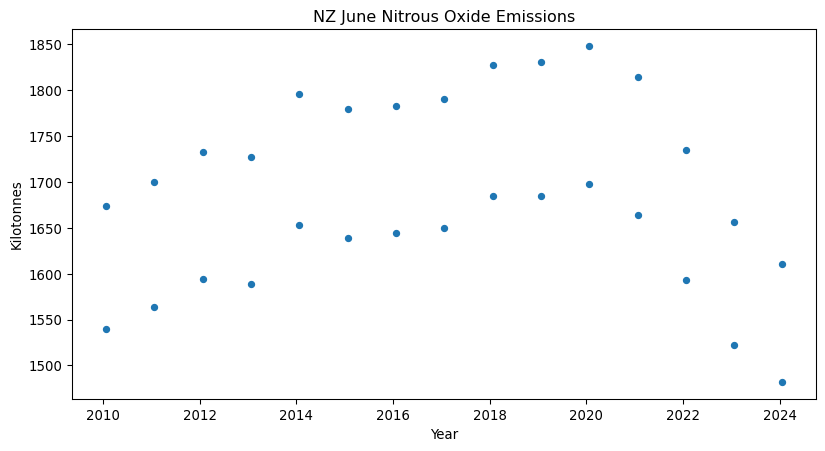

Python Lectures
Introducing Python
- It allows for more flexibility than a GUI based GIS program.
- Other GIS applications (e.g. QGIS, ArcGIS, postGIS) often have a Python interface.
- generally a widely used language.
Environment
Before we get started we need to set up a Python environment in which to work. We will be using Anaconda for this. It should already be installed on the lab computers. If you are using your own computer
- Download the environment.yml
- If you are working on a lab computer In the start menu search for Anaconda. Open an Anaconda Powershell. (on linux or mac with Anconda or miniconda or Mamba installed just open a terminal)(If you are installing on your own computer I recommend Mamba)
What is this environment.yml thing?
Using conda env create with the environment yaml creates a new conda environment named geo with the dependencies installed. Next we will activate the geo environment.
Notice that the conda environment shown after the prompt has changed from (base) to (geo).
If later you find that you need another package you can add it to the environment (while in the environment) with conda install <whatever_package>.
Starting a Jupyter Lab
This will open a new jupyter lab in your browser.
Using VScode
Running Jupyter in VScode offers some advantages (in my opinion). To do this you need to install the jupyter extension and the Python Extension. Then when you open a file with a .ipynb extension it will be treated as a Jupyter notebook.
Basic Python data types
| Type | Example(s) |
|---|---|
| String | 'Dude!' |
| Float | 1.2 |
| Int | 3 |
| Tuple | ('x', 'y')(1, 2)('x', 3.2) |
| List | ['x', 'y'][1, 2]Possible but bad –> ['x', 3.2] |
| Dict | {'dogs': 26, 'cats', 100} |
| etc… | there are others |
Basic Numbers
Floats and Ints don’t do anything all that surprising
a is an <class 'int'>
b is a <class 'float'>
c is a <class 'float'>
a / b is 1.0
5 / 4 is 1.25
but 5 // 4 is 1
and 5 % 4 is 1Exercise - Basic Numbers
Try the following, print the results, see what they do.
Sequences
Lists, tuples, and strings ae all sequences
# a list
a_list = [1, 2, 3, 4, 5, 6, 7, 8, 9]
# a tuple
a_tup = (1, 2, 3, 4, 5, 6, 7, 8, 9)
# a string
a_str = 'Wil je graag een neushorn?'
# access by index
a = a_list[0]
b = a_list[-1]
c = a_list[4]
print(f'by index:\n 0 --> {a},\n-1 --> {b},\n 4 --> {c}')
# works fro strings to
print('string item at 4 --> ', a_str[4])
# you can slice a list or tuple(remember 0 indexed)
print('\nslices:')
print(a_list[2:5])
print(a_list[8:])
print(a_tup[2:5])
print(a_str[-9:])by index:
0 --> 1,
-1 --> 9,
4 --> 5
string item at 4 --> j
slices:
[3, 4, 5]
[9]
(3, 4, 5)
neushorn?Exercise - Lists and Tuples
The key between lists and tuples is that tuples are immutable. Try assigning a value to both of the following.
Dictionaries
26 honden
100 katten
126 huisdierenIterating
Exercise - Iterating
You can nest loops.
[(0, 0), (0, 1), (0, 2), (1, 0), (1, 1), (1, 2), (2, 0), (2, 1), (2, 2)]- Recreate the above with a list comprehension.
- replace the square brackets in this list comprehension,
= [n**2 for n in a], with parenthesis. - Can you create a dictionary with a comprehension.
Functions
- Defined with def
- Can take arguments
- can return something
- have there own scope
2.6034592372457075They do not have to have arguments or return stuff.
This is boring!
when will we get to the GIS stuff.
üò†üò†üò†
Soon! Bear with me.Python is an object oriented programming language. Everything that you can assign to a variable (which is almost everything) can be though of as an object, for example, built in functions are objects.
Many objects have built in functions as an attribute, these are called methods. For instance, strings have a method called split (they have many other methods as well).
['hyphens', 'are', 'everywhere', 'they', 'haunt', 'me', 'in', 'my', 'dreams']We will encounter heaps of methods later.
Exercise - Functions
Use a function and a list comprehension to reproduce the results of the for loop below:
[5.487822222222222, 2.36, 1.25]Take some time to contemplate, what is this?
array([[1, 2, 3],
[4, 5, 6],
[7, 8, 9]])BTW, you can import a library as anything you want
Why would one avoid doing this kind of thing?
You can also dump all of the objects from a module into the main namespace
Why is this a bad practice? What Is a namespace
Pandas DataFrame
DataFrames hold tabular data. Here we will read a csv file as a DataFrame and mess with it.
- This cell just downloads the file from a url. Take a few minutes and see if you can change it to be generally useful by allowing the url and save location to be specified as arguments. Hint, you need to change very little, and you don’t really need to know how the function works in any detail.
import requests
from pathlib import Path
def get_NZ_file():
'''
A purposefully bad function to download one specific file.
'''
# url to Dec 2024 NZ GH emissions by industry (long url!)
url = 'https://www.stats.govt.nz/assets/Uploads/Greenhouse-gas-emissions-industry-and-household/Greenhouse-gas-emissions-industry-and-household-December-2024-quarter/Download-data/greenhouse-gas-emissions-industry-and-household-december-2024-quarter.csv'
# make a dir for data, if does not exist
save_dir = Path.cwd() / 'data'
save_dir.mkdir(exist_ok=True)
# get file name
basename = url.split('/')[-1]
# and a directory to save to
save_path = save_dir / basename
try:
response = requests.get(url, stream=True)
# raise HTTPError for bad responses (4xx or 5xx)
response.raise_for_status()
with open(save_path, 'wb') as file:
for chunk in response.iter_content(chunk_size=8192):
file.write(chunk)
print(f"File downloaded successfully to {save_path}")
except requests.exceptions.RequestException as e:
print(f'An error occurred: {e}')
except Exception as e:
print(f'An unexpected error occurred: {e}')
return save_path
file_path = get_NZ_file()File downloaded successfully to /home/michael/Work/geog441/data/greenhouse-gas-emissions-industry-and-household-december-2024-quarter.csv- Read the csv, and look at the head (first few rows). Notice that there are column names, and on the left side there is a numerical index.
| Anzsic | Anzsic_descriptor | Gas | Period | Data_value | Variable | Units | Magnitude | |
|---|---|---|---|---|---|---|---|---|
| 0 | AAZ | Agriculture, forestry, fishing | Carbon dioxide equivalents | 2010.03 | 10875 | Seasonally adjusted | Kilotonnes | Carbon dioxide equivalents |
| 1 | AAZ | Agriculture, forestry, fishing | Carbon dioxide equivalents | 2010.06 | 11003 | Seasonally adjusted | Kilotonnes | Carbon dioxide equivalents |
| 2 | AAZ | Agriculture, forestry, fishing | Carbon dioxide equivalents | 2010.09 | 10993 | Seasonally adjusted | Kilotonnes | Carbon dioxide equivalents |
| 3 | AAZ | Agriculture, forestry, fishing | Carbon dioxide equivalents | 2010.12 | 10914 | Seasonally adjusted | Kilotonnes | Carbon dioxide equivalents |
| 4 | AAZ | Agriculture, forestry, fishing | Carbon dioxide equivalents | 2011.03 | 11014 | Seasonally adjusted | Kilotonnes | Carbon dioxide equivalents |
We can also see the last few rows if we want.
| Anzsic | Anzsic_descriptor | Gas | Period | Data_value | Variable | Units | Magnitude | |
|---|---|---|---|---|---|---|---|---|
| 4795 | ZZZ | Total | Nitrous oxide | 2023.12 | 1708 | Actual | Kilotonnes | Carbon dioxide equivalents |
| 4796 | ZZZ | Total | Nitrous oxide | 2024.03 | 1615 | Actual | Kilotonnes | Carbon dioxide equivalents |
| 4797 | ZZZ | Total | Nitrous oxide | 2024.06 | 1482 | Actual | Kilotonnes | Carbon dioxide equivalents |
| 4798 | ZZZ | Total | Nitrous oxide | 2024.09 | 1652 | Actual | Kilotonnes | Carbon dioxide equivalents |
| 4799 | ZZZ | Total | Nitrous oxide | 2024.12 | 1662 | Actual | Kilotonnes | Carbon dioxide equivalents |
Or we can slice from the middle using index slicing, just like with a list.
| Anzsic | Anzsic_descriptor | Gas | Period | Data_value | Variable | Units | Magnitude | |
|---|---|---|---|---|---|---|---|---|
| 100 | BB1 | Mining | Carbon dioxide equivalents | 2020.03 | 307 | Seasonally adjusted | Kilotonnes | Carbon dioxide equivalents |
| 101 | BB1 | Mining | Carbon dioxide equivalents | 2020.06 | 256 | Seasonally adjusted | Kilotonnes | Carbon dioxide equivalents |
| 102 | BB1 | Mining | Carbon dioxide equivalents | 2020.09 | 280 | Seasonally adjusted | Kilotonnes | Carbon dioxide equivalents |
| 103 | BB1 | Mining | Carbon dioxide equivalents | 2020.12 | 271 | Seasonally adjusted | Kilotonnes | Carbon dioxide equivalents |
| 104 | BB1 | Mining | Carbon dioxide equivalents | 2021.03 | 276 | Seasonally adjusted | Kilotonnes | Carbon dioxide equivalents |
There are many other ways to select from Pandas DataFrames.
The Period column gives dates, but they are in a format that will be interpreted as floats (e.g. 20007.08). Here we change them to datetimes and use them to set the index, giving us a DateTime index.
Earlier we mentioned methods, and we saw that strings have method split() which splits the string. Columns in Pandas that are of the type str, that is to say string, have all of the same methods under an attribute called str.
This cell uses many methods strung together to change the Period column to DateTime format and set the index.
| Anzsic | Anzsic_descriptor | Gas | Period | Data_value | Variable | Units | Magnitude | |
|---|---|---|---|---|---|---|---|---|
| Period | ||||||||
| 2010-03-01 | AAZ | Agriculture, forestry, fishing | Carbon dioxide equivalents | 2010.03 | 10875 | Seasonally adjusted | Kilotonnes | Carbon dioxide equivalents |
| 2010-06-01 | AAZ | Agriculture, forestry, fishing | Carbon dioxide equivalents | 2010.06 | 11003 | Seasonally adjusted | Kilotonnes | Carbon dioxide equivalents |
| 2010-09-01 | AAZ | Agriculture, forestry, fishing | Carbon dioxide equivalents | 2010.09 | 10993 | Seasonally adjusted | Kilotonnes | Carbon dioxide equivalents |
| 2010-12-01 | AAZ | Agriculture, forestry, fishing | Carbon dioxide equivalents | 2010.12 | 10914 | Seasonally adjusted | Kilotonnes | Carbon dioxide equivalents |
| 2011-03-01 | AAZ | Agriculture, forestry, fishing | Carbon dioxide equivalents | 2011.03 | 11014 | Seasonally adjusted | Kilotonnes | Carbon dioxide equivalents |
See what gasses are measured by looking at unique values in the Gas column.
array(['Carbon dioxide equivalents', 'Methane', 'Carbon dioxide',
'Fluorinated gases', 'Nitrous oxide'], dtype=object)Text(0.5, 0, 'Year')
Pandas DataFrame Cont.
There is a lot more to know about Pandas DataFrames. This is enough for us to move on to GeoPandas. I encourage you to learn more about Pandas as an exercise.
Exploring Vector Data with Geopandas
Geopandas
Vector Data
- Most often we will interact with vector data using GeoPandas
- GeoPandas is an extension of Pandas.
- It uses Fiona, which in-turn relies on GDAL and OGR, to read and write.
- Vector data is handled by the Shapely module, which relies on GEOS.
- GEOS implements the OGC Simple Features geometry
- Projections are managed by pyproj which is built upon PROJ
Shapely
- Shapely Geometric Objects consist of coordinate tuples:
- Point - (x, y) or three dimensional (x, y, z), e.g.
Point(5.2, 52.1) - LineString - List if coordinates of vertices, e.g.
LineString([(0, 0), (1, 2)]) - Polygon - Basically a closed linestring, e.g.
Polygon(((0., 0.), (0., 1.), (1., 1.), (1., 0.), (0., 0.))) - Notice that the first and last coord of the Polygon are the same.
- More on Shapely geometries
- Point - (x, y) or three dimensional (x, y, z), e.g.
Polygon
Reading Files
Here we will read a geojson using the read_file method.
| id | geometry | |
|---|---|---|
| 0 | globalwatershedpoint | POINT (-120.80331 35.52537) |
| 1 | globalwatershed | POLYGON ((-120.81096 35.50944, -120.81161 35.5... |

| community | NID | POP2010 | POP2000 | POPCH | POPPERCH | popplus | popneg | geometry | |
|---|---|---|---|---|---|---|---|---|---|
| 0 | DOUGLAS | 35 | 18238 | 26470 | -8232 | -31.099358 | 0 | 1 | MULTIPOLYGON (((-87.60914 41.84469, -87.60915 ... |
| 1 | OAKLAND | 36 | 5918 | 6110 | -192 | -3.142390 | 0 | 1 | MULTIPOLYGON (((-87.59215 41.81693, -87.59231 ... |
| 2 | FULLER PARK | 37 | 2876 | 3420 | -544 | -15.906433 | 0 | 1 | MULTIPOLYGON (((-87.6288 41.80189, -87.62879 4... |
| 3 | GRAND BOULEVARD | 38 | 21929 | 28006 | -6077 | -21.698922 | 0 | 1 | MULTIPOLYGON (((-87.60671 41.81681, -87.6067 4... |
| 4 | KENWOOD | 39 | 17841 | 18363 | -522 | -2.842673 | 0 | 1 | MULTIPOLYGON (((-87.59215 41.81693, -87.59215 ... |
Plot Cloropleth

The Chicago example is taken from GeoPandas Mapping and plotting tools tutorial, which you should take a look at.
Working with Rasters in Python
rioXarray
Working with Climate data with rioXarray
In this tutorial we will be looking at sea surface temaperatures using Community Earth System Model 2 (CESM2) data. This tutorial borrows heavily from this tutorial by Computational Tools in Climate Science.
First import libraries and download dataset.
Open the dataset and inspect.
<xarray.Dataset> Size: 47MB
Dimensions: (time: 180, d2: 2, lat: 180, lon: 360)
Coordinates:
* time (time) object 1kB 2000-01-15 12:00:00 ... 2014-12-15 12:00:00
* lat (lat) float64 1kB -89.5 -88.5 -87.5 -86.5 ... 86.5 87.5 88.5 89.5
* lon (lon) float64 3kB 0.5 1.5 2.5 3.5 4.5 ... 356.5 357.5 358.5 359.5
Dimensions without coordinates: d2
Data variables:
time_bnds (time, d2) object 3kB ...
lat_bnds (lat, d2) float64 3kB ...
lon_bnds (lon, d2) float64 6kB ...
tos (time, lat, lon) float32 47MB ...
Attributes: (12/45)
Conventions: CF-1.7 CMIP-6.2
activity_id: CMIP
branch_method: standard
branch_time_in_child: 674885.0
branch_time_in_parent: 219000.0
case_id: 972
... ...
sub_experiment_id: none
table_id: Omon
tracking_id: hdl:21.14100/2975ffd3-1d7b-47e3-961a-33f212ea4eb2
variable_id: tos
variant_info: CMIP6 20th century experiments (1850-2014) with C...
variant_label: r11i1p1f1- time: 180
- d2: 2
- lat: 180
- lon: 360
- time(time)object2000-01-15 12:00:00 ... 2014-12-...
- axis :
- T
- bounds :
- time_bnds
- standard_name :
- time
- title :
- time
- type :
- double
array([cftime.DatetimeNoLeap(2000, 1, 15, 12, 0, 0, 0, has_year_zero=True), cftime.DatetimeNoLeap(2000, 2, 14, 0, 0, 0, 0, has_year_zero=True), cftime.DatetimeNoLeap(2000, 3, 15, 12, 0, 0, 0, has_year_zero=True), cftime.DatetimeNoLeap(2000, 4, 15, 0, 0, 0, 0, has_year_zero=True), cftime.DatetimeNoLeap(2000, 5, 15, 12, 0, 0, 0, has_year_zero=True), cftime.DatetimeNoLeap(2000, 6, 15, 0, 0, 0, 0, has_year_zero=True), cftime.DatetimeNoLeap(2000, 7, 15, 12, 0, 0, 0, has_year_zero=True), cftime.DatetimeNoLeap(2000, 8, 15, 12, 0, 0, 0, has_year_zero=True), cftime.DatetimeNoLeap(2000, 9, 15, 0, 0, 0, 0, has_year_zero=True), cftime.DatetimeNoLeap(2000, 10, 15, 12, 0, 0, 0, has_year_zero=True), cftime.DatetimeNoLeap(2000, 11, 15, 0, 0, 0, 0, has_year_zero=True), cftime.DatetimeNoLeap(2000, 12, 15, 12, 0, 0, 0, has_year_zero=True), cftime.DatetimeNoLeap(2001, 1, 15, 12, 0, 0, 0, has_year_zero=True), cftime.DatetimeNoLeap(2001, 2, 14, 0, 0, 0, 0, has_year_zero=True), cftime.DatetimeNoLeap(2001, 3, 15, 12, 0, 0, 0, has_year_zero=True), cftime.DatetimeNoLeap(2001, 4, 15, 0, 0, 0, 0, has_year_zero=True), cftime.DatetimeNoLeap(2001, 5, 15, 12, 0, 0, 0, has_year_zero=True), cftime.DatetimeNoLeap(2001, 6, 15, 0, 0, 0, 0, has_year_zero=True), cftime.DatetimeNoLeap(2001, 7, 15, 12, 0, 0, 0, has_year_zero=True), cftime.DatetimeNoLeap(2001, 8, 15, 12, 0, 0, 0, has_year_zero=True), cftime.DatetimeNoLeap(2001, 9, 15, 0, 0, 0, 0, has_year_zero=True), cftime.DatetimeNoLeap(2001, 10, 15, 12, 0, 0, 0, has_year_zero=True), cftime.DatetimeNoLeap(2001, 11, 15, 0, 0, 0, 0, has_year_zero=True), cftime.DatetimeNoLeap(2001, 12, 15, 12, 0, 0, 0, has_year_zero=True), cftime.DatetimeNoLeap(2002, 1, 15, 12, 0, 0, 0, has_year_zero=True), cftime.DatetimeNoLeap(2002, 2, 14, 0, 0, 0, 0, has_year_zero=True), cftime.DatetimeNoLeap(2002, 3, 15, 12, 0, 0, 0, has_year_zero=True), cftime.DatetimeNoLeap(2002, 4, 15, 0, 0, 0, 0, has_year_zero=True), cftime.DatetimeNoLeap(2002, 5, 15, 12, 0, 0, 0, has_year_zero=True), cftime.DatetimeNoLeap(2002, 6, 15, 0, 0, 0, 0, has_year_zero=True), cftime.DatetimeNoLeap(2002, 7, 15, 12, 0, 0, 0, has_year_zero=True), cftime.DatetimeNoLeap(2002, 8, 15, 12, 0, 0, 0, has_year_zero=True), cftime.DatetimeNoLeap(2002, 9, 15, 0, 0, 0, 0, has_year_zero=True), cftime.DatetimeNoLeap(2002, 10, 15, 12, 0, 0, 0, has_year_zero=True), cftime.DatetimeNoLeap(2002, 11, 15, 0, 0, 0, 0, has_year_zero=True), cftime.DatetimeNoLeap(2002, 12, 15, 12, 0, 0, 0, has_year_zero=True), cftime.DatetimeNoLeap(2003, 1, 15, 12, 0, 0, 0, has_year_zero=True), cftime.DatetimeNoLeap(2003, 2, 14, 0, 0, 0, 0, has_year_zero=True), cftime.DatetimeNoLeap(2003, 3, 15, 12, 0, 0, 0, has_year_zero=True), cftime.DatetimeNoLeap(2003, 4, 15, 0, 0, 0, 0, has_year_zero=True), cftime.DatetimeNoLeap(2003, 5, 15, 12, 0, 0, 0, has_year_zero=True), cftime.DatetimeNoLeap(2003, 6, 15, 0, 0, 0, 0, has_year_zero=True), cftime.DatetimeNoLeap(2003, 7, 15, 12, 0, 0, 0, has_year_zero=True), cftime.DatetimeNoLeap(2003, 8, 15, 12, 0, 0, 0, has_year_zero=True), cftime.DatetimeNoLeap(2003, 9, 15, 0, 0, 0, 0, has_year_zero=True), cftime.DatetimeNoLeap(2003, 10, 15, 12, 0, 0, 0, has_year_zero=True), cftime.DatetimeNoLeap(2003, 11, 15, 0, 0, 0, 0, has_year_zero=True), cftime.DatetimeNoLeap(2003, 12, 15, 12, 0, 0, 0, has_year_zero=True), cftime.DatetimeNoLeap(2004, 1, 15, 12, 0, 0, 0, has_year_zero=True), cftime.DatetimeNoLeap(2004, 2, 14, 0, 0, 0, 0, has_year_zero=True), cftime.DatetimeNoLeap(2004, 3, 15, 12, 0, 0, 0, has_year_zero=True), cftime.DatetimeNoLeap(2004, 4, 15, 0, 0, 0, 0, has_year_zero=True), cftime.DatetimeNoLeap(2004, 5, 15, 12, 0, 0, 0, has_year_zero=True), cftime.DatetimeNoLeap(2004, 6, 15, 0, 0, 0, 0, has_year_zero=True), cftime.DatetimeNoLeap(2004, 7, 15, 12, 0, 0, 0, has_year_zero=True), cftime.DatetimeNoLeap(2004, 8, 15, 12, 0, 0, 0, has_year_zero=True), cftime.DatetimeNoLeap(2004, 9, 15, 0, 0, 0, 0, has_year_zero=True), cftime.DatetimeNoLeap(2004, 10, 15, 12, 0, 0, 0, has_year_zero=True), cftime.DatetimeNoLeap(2004, 11, 15, 0, 0, 0, 0, has_year_zero=True), cftime.DatetimeNoLeap(2004, 12, 15, 12, 0, 0, 0, has_year_zero=True), cftime.DatetimeNoLeap(2005, 1, 15, 12, 0, 0, 0, has_year_zero=True), cftime.DatetimeNoLeap(2005, 2, 14, 0, 0, 0, 0, has_year_zero=True), cftime.DatetimeNoLeap(2005, 3, 15, 12, 0, 0, 0, has_year_zero=True), cftime.DatetimeNoLeap(2005, 4, 15, 0, 0, 0, 0, has_year_zero=True), cftime.DatetimeNoLeap(2005, 5, 15, 12, 0, 0, 0, has_year_zero=True), cftime.DatetimeNoLeap(2005, 6, 15, 0, 0, 0, 0, has_year_zero=True), cftime.DatetimeNoLeap(2005, 7, 15, 12, 0, 0, 0, has_year_zero=True), cftime.DatetimeNoLeap(2005, 8, 15, 12, 0, 0, 0, has_year_zero=True), cftime.DatetimeNoLeap(2005, 9, 15, 0, 0, 0, 0, has_year_zero=True), cftime.DatetimeNoLeap(2005, 10, 15, 12, 0, 0, 0, has_year_zero=True), cftime.DatetimeNoLeap(2005, 11, 15, 0, 0, 0, 0, has_year_zero=True), cftime.DatetimeNoLeap(2005, 12, 15, 12, 0, 0, 0, has_year_zero=True), cftime.DatetimeNoLeap(2006, 1, 15, 12, 0, 0, 0, has_year_zero=True), cftime.DatetimeNoLeap(2006, 2, 14, 0, 0, 0, 0, has_year_zero=True), cftime.DatetimeNoLeap(2006, 3, 15, 12, 0, 0, 0, has_year_zero=True), cftime.DatetimeNoLeap(2006, 4, 15, 0, 0, 0, 0, has_year_zero=True), cftime.DatetimeNoLeap(2006, 5, 15, 12, 0, 0, 0, has_year_zero=True), cftime.DatetimeNoLeap(2006, 6, 15, 0, 0, 0, 0, has_year_zero=True), cftime.DatetimeNoLeap(2006, 7, 15, 12, 0, 0, 0, has_year_zero=True), cftime.DatetimeNoLeap(2006, 8, 15, 12, 0, 0, 0, has_year_zero=True), cftime.DatetimeNoLeap(2006, 9, 15, 0, 0, 0, 0, has_year_zero=True), cftime.DatetimeNoLeap(2006, 10, 15, 12, 0, 0, 0, has_year_zero=True), cftime.DatetimeNoLeap(2006, 11, 15, 0, 0, 0, 0, has_year_zero=True), cftime.DatetimeNoLeap(2006, 12, 15, 12, 0, 0, 0, has_year_zero=True), cftime.DatetimeNoLeap(2007, 1, 15, 12, 0, 0, 0, has_year_zero=True), cftime.DatetimeNoLeap(2007, 2, 14, 0, 0, 0, 0, has_year_zero=True), cftime.DatetimeNoLeap(2007, 3, 15, 12, 0, 0, 0, has_year_zero=True), cftime.DatetimeNoLeap(2007, 4, 15, 0, 0, 0, 0, has_year_zero=True), cftime.DatetimeNoLeap(2007, 5, 15, 12, 0, 0, 0, has_year_zero=True), cftime.DatetimeNoLeap(2007, 6, 15, 0, 0, 0, 0, has_year_zero=True), cftime.DatetimeNoLeap(2007, 7, 15, 12, 0, 0, 0, has_year_zero=True), cftime.DatetimeNoLeap(2007, 8, 15, 12, 0, 0, 0, has_year_zero=True), cftime.DatetimeNoLeap(2007, 9, 15, 0, 0, 0, 0, has_year_zero=True), cftime.DatetimeNoLeap(2007, 10, 15, 12, 0, 0, 0, has_year_zero=True), cftime.DatetimeNoLeap(2007, 11, 15, 0, 0, 0, 0, has_year_zero=True), cftime.DatetimeNoLeap(2007, 12, 15, 12, 0, 0, 0, has_year_zero=True), cftime.DatetimeNoLeap(2008, 1, 15, 12, 0, 0, 0, has_year_zero=True), cftime.DatetimeNoLeap(2008, 2, 14, 0, 0, 0, 0, has_year_zero=True), cftime.DatetimeNoLeap(2008, 3, 15, 12, 0, 0, 0, has_year_zero=True), cftime.DatetimeNoLeap(2008, 4, 15, 0, 0, 0, 0, has_year_zero=True), cftime.DatetimeNoLeap(2008, 5, 15, 12, 0, 0, 0, has_year_zero=True), cftime.DatetimeNoLeap(2008, 6, 15, 0, 0, 0, 0, has_year_zero=True), cftime.DatetimeNoLeap(2008, 7, 15, 12, 0, 0, 0, has_year_zero=True), cftime.DatetimeNoLeap(2008, 8, 15, 12, 0, 0, 0, has_year_zero=True), cftime.DatetimeNoLeap(2008, 9, 15, 0, 0, 0, 0, has_year_zero=True), cftime.DatetimeNoLeap(2008, 10, 15, 12, 0, 0, 0, has_year_zero=True), cftime.DatetimeNoLeap(2008, 11, 15, 0, 0, 0, 0, has_year_zero=True), cftime.DatetimeNoLeap(2008, 12, 15, 12, 0, 0, 0, has_year_zero=True), cftime.DatetimeNoLeap(2009, 1, 15, 12, 0, 0, 0, has_year_zero=True), cftime.DatetimeNoLeap(2009, 2, 14, 0, 0, 0, 0, has_year_zero=True), cftime.DatetimeNoLeap(2009, 3, 15, 12, 0, 0, 0, has_year_zero=True), cftime.DatetimeNoLeap(2009, 4, 15, 0, 0, 0, 0, has_year_zero=True), cftime.DatetimeNoLeap(2009, 5, 15, 12, 0, 0, 0, has_year_zero=True), cftime.DatetimeNoLeap(2009, 6, 15, 0, 0, 0, 0, has_year_zero=True), cftime.DatetimeNoLeap(2009, 7, 15, 12, 0, 0, 0, has_year_zero=True), cftime.DatetimeNoLeap(2009, 8, 15, 12, 0, 0, 0, has_year_zero=True), cftime.DatetimeNoLeap(2009, 9, 15, 0, 0, 0, 0, has_year_zero=True), cftime.DatetimeNoLeap(2009, 10, 15, 12, 0, 0, 0, has_year_zero=True), cftime.DatetimeNoLeap(2009, 11, 15, 0, 0, 0, 0, has_year_zero=True), cftime.DatetimeNoLeap(2009, 12, 15, 12, 0, 0, 0, has_year_zero=True), cftime.DatetimeNoLeap(2010, 1, 15, 12, 0, 0, 0, has_year_zero=True), cftime.DatetimeNoLeap(2010, 2, 14, 0, 0, 0, 0, has_year_zero=True), cftime.DatetimeNoLeap(2010, 3, 15, 12, 0, 0, 0, has_year_zero=True), cftime.DatetimeNoLeap(2010, 4, 15, 0, 0, 0, 0, has_year_zero=True), cftime.DatetimeNoLeap(2010, 5, 15, 12, 0, 0, 0, has_year_zero=True), cftime.DatetimeNoLeap(2010, 6, 15, 0, 0, 0, 0, has_year_zero=True), cftime.DatetimeNoLeap(2010, 7, 15, 12, 0, 0, 0, has_year_zero=True), cftime.DatetimeNoLeap(2010, 8, 15, 12, 0, 0, 0, has_year_zero=True), cftime.DatetimeNoLeap(2010, 9, 15, 0, 0, 0, 0, has_year_zero=True), cftime.DatetimeNoLeap(2010, 10, 15, 12, 0, 0, 0, has_year_zero=True), cftime.DatetimeNoLeap(2010, 11, 15, 0, 0, 0, 0, has_year_zero=True), cftime.DatetimeNoLeap(2010, 12, 15, 12, 0, 0, 0, has_year_zero=True), cftime.DatetimeNoLeap(2011, 1, 15, 12, 0, 0, 0, has_year_zero=True), cftime.DatetimeNoLeap(2011, 2, 14, 0, 0, 0, 0, has_year_zero=True), cftime.DatetimeNoLeap(2011, 3, 15, 12, 0, 0, 0, has_year_zero=True), cftime.DatetimeNoLeap(2011, 4, 15, 0, 0, 0, 0, has_year_zero=True), cftime.DatetimeNoLeap(2011, 5, 15, 12, 0, 0, 0, has_year_zero=True), cftime.DatetimeNoLeap(2011, 6, 15, 0, 0, 0, 0, has_year_zero=True), cftime.DatetimeNoLeap(2011, 7, 15, 12, 0, 0, 0, has_year_zero=True), cftime.DatetimeNoLeap(2011, 8, 15, 12, 0, 0, 0, has_year_zero=True), cftime.DatetimeNoLeap(2011, 9, 15, 0, 0, 0, 0, has_year_zero=True), cftime.DatetimeNoLeap(2011, 10, 15, 12, 0, 0, 0, has_year_zero=True), cftime.DatetimeNoLeap(2011, 11, 15, 0, 0, 0, 0, has_year_zero=True), cftime.DatetimeNoLeap(2011, 12, 15, 12, 0, 0, 0, has_year_zero=True), cftime.DatetimeNoLeap(2012, 1, 15, 12, 0, 0, 0, has_year_zero=True), cftime.DatetimeNoLeap(2012, 2, 14, 0, 0, 0, 0, has_year_zero=True), cftime.DatetimeNoLeap(2012, 3, 15, 12, 0, 0, 0, has_year_zero=True), cftime.DatetimeNoLeap(2012, 4, 15, 0, 0, 0, 0, has_year_zero=True), cftime.DatetimeNoLeap(2012, 5, 15, 12, 0, 0, 0, has_year_zero=True), cftime.DatetimeNoLeap(2012, 6, 15, 0, 0, 0, 0, has_year_zero=True), cftime.DatetimeNoLeap(2012, 7, 15, 12, 0, 0, 0, has_year_zero=True), cftime.DatetimeNoLeap(2012, 8, 15, 12, 0, 0, 0, has_year_zero=True), cftime.DatetimeNoLeap(2012, 9, 15, 0, 0, 0, 0, has_year_zero=True), cftime.DatetimeNoLeap(2012, 10, 15, 12, 0, 0, 0, has_year_zero=True), cftime.DatetimeNoLeap(2012, 11, 15, 0, 0, 0, 0, has_year_zero=True), cftime.DatetimeNoLeap(2012, 12, 15, 12, 0, 0, 0, has_year_zero=True), cftime.DatetimeNoLeap(2013, 1, 15, 12, 0, 0, 0, has_year_zero=True), cftime.DatetimeNoLeap(2013, 2, 14, 0, 0, 0, 0, has_year_zero=True), cftime.DatetimeNoLeap(2013, 3, 15, 12, 0, 0, 0, has_year_zero=True), cftime.DatetimeNoLeap(2013, 4, 15, 0, 0, 0, 0, has_year_zero=True), cftime.DatetimeNoLeap(2013, 5, 15, 12, 0, 0, 0, has_year_zero=True), cftime.DatetimeNoLeap(2013, 6, 15, 0, 0, 0, 0, has_year_zero=True), cftime.DatetimeNoLeap(2013, 7, 15, 12, 0, 0, 0, has_year_zero=True), cftime.DatetimeNoLeap(2013, 8, 15, 12, 0, 0, 0, has_year_zero=True), cftime.DatetimeNoLeap(2013, 9, 15, 0, 0, 0, 0, has_year_zero=True), cftime.DatetimeNoLeap(2013, 10, 15, 12, 0, 0, 0, has_year_zero=True), cftime.DatetimeNoLeap(2013, 11, 15, 0, 0, 0, 0, has_year_zero=True), cftime.DatetimeNoLeap(2013, 12, 15, 12, 0, 0, 0, has_year_zero=True), cftime.DatetimeNoLeap(2014, 1, 15, 12, 0, 0, 0, has_year_zero=True), cftime.DatetimeNoLeap(2014, 2, 14, 0, 0, 0, 0, has_year_zero=True), cftime.DatetimeNoLeap(2014, 3, 15, 12, 0, 0, 0, has_year_zero=True), cftime.DatetimeNoLeap(2014, 4, 15, 0, 0, 0, 0, has_year_zero=True), cftime.DatetimeNoLeap(2014, 5, 15, 12, 0, 0, 0, has_year_zero=True), cftime.DatetimeNoLeap(2014, 6, 15, 0, 0, 0, 0, has_year_zero=True), cftime.DatetimeNoLeap(2014, 7, 15, 12, 0, 0, 0, has_year_zero=True), cftime.DatetimeNoLeap(2014, 8, 15, 12, 0, 0, 0, has_year_zero=True), cftime.DatetimeNoLeap(2014, 9, 15, 0, 0, 0, 0, has_year_zero=True), cftime.DatetimeNoLeap(2014, 10, 15, 12, 0, 0, 0, has_year_zero=True), cftime.DatetimeNoLeap(2014, 11, 15, 0, 0, 0, 0, has_year_zero=True), cftime.DatetimeNoLeap(2014, 12, 15, 12, 0, 0, 0, has_year_zero=True)], dtype=object) - lat(lat)float64-89.5 -88.5 -87.5 ... 88.5 89.5
- axis :
- Y
- bounds :
- lat_bnds
- long_name :
- latitude
- standard_name :
- latitude
- units :
- degrees_north
array([-89.5, -88.5, -87.5, -86.5, -85.5, -84.5, -83.5, -82.5, -81.5, -80.5, -79.5, -78.5, -77.5, -76.5, -75.5, -74.5, -73.5, -72.5, -71.5, -70.5, -69.5, -68.5, -67.5, -66.5, -65.5, -64.5, -63.5, -62.5, -61.5, -60.5, -59.5, -58.5, -57.5, -56.5, -55.5, -54.5, -53.5, -52.5, -51.5, -50.5, -49.5, -48.5, -47.5, -46.5, -45.5, -44.5, -43.5, -42.5, -41.5, -40.5, -39.5, -38.5, -37.5, -36.5, -35.5, -34.5, -33.5, -32.5, -31.5, -30.5, -29.5, -28.5, -27.5, -26.5, -25.5, -24.5, -23.5, -22.5, -21.5, -20.5, -19.5, -18.5, -17.5, -16.5, -15.5, -14.5, -13.5, -12.5, -11.5, -10.5, -9.5, -8.5, -7.5, -6.5, -5.5, -4.5, -3.5, -2.5, -1.5, -0.5, 0.5, 1.5, 2.5, 3.5, 4.5, 5.5, 6.5, 7.5, 8.5, 9.5, 10.5, 11.5, 12.5, 13.5, 14.5, 15.5, 16.5, 17.5, 18.5, 19.5, 20.5, 21.5, 22.5, 23.5, 24.5, 25.5, 26.5, 27.5, 28.5, 29.5, 30.5, 31.5, 32.5, 33.5, 34.5, 35.5, 36.5, 37.5, 38.5, 39.5, 40.5, 41.5, 42.5, 43.5, 44.5, 45.5, 46.5, 47.5, 48.5, 49.5, 50.5, 51.5, 52.5, 53.5, 54.5, 55.5, 56.5, 57.5, 58.5, 59.5, 60.5, 61.5, 62.5, 63.5, 64.5, 65.5, 66.5, 67.5, 68.5, 69.5, 70.5, 71.5, 72.5, 73.5, 74.5, 75.5, 76.5, 77.5, 78.5, 79.5, 80.5, 81.5, 82.5, 83.5, 84.5, 85.5, 86.5, 87.5, 88.5, 89.5]) - lon(lon)float640.5 1.5 2.5 ... 357.5 358.5 359.5
- axis :
- X
- bounds :
- lon_bnds
- long_name :
- longitude
- standard_name :
- longitude
- units :
- degrees_east
array([ 0.5, 1.5, 2.5, ..., 357.5, 358.5, 359.5])
- time_bnds(time, d2)object...
[360 values with dtype=object]
- lat_bnds(lat, d2)float64...
- long_name :
- latitude bounds
- units :
- degrees_north
[360 values with dtype=float64]
- lon_bnds(lon, d2)float64...
- long_name :
- longitude bounds
- units :
- degrees_east
[720 values with dtype=float64]
- tos(time, lat, lon)float32...
- cell_measures :
- area: areacello
- cell_methods :
- area: mean where sea time: mean
- comment :
- Model data on the 1x1 grid includes values in all cells for which ocean cells on the native grid cover more than 52.5 percent of the 1x1 grid cell. This 52.5 percent cutoff was chosen to produce ocean surface area on the 1x1 grid as close as possible to ocean surface area on the native grid, while not introducing fractional cell coverage.
- description :
- This may differ from "surface temperature" in regions of sea ice or floating ice shelves. For models using conservative temperature as the prognostic field, they should report the top ocean layer as surface potential temperature, which is the same as surface in situ temperature.
- frequency :
- mon
- id :
- tos
- long_name :
- Sea Surface Temperature
- mipTable :
- Omon
- out_name :
- tos
- prov :
- Omon ((isd.003))
- realm :
- ocean
- standard_name :
- sea_surface_temperature
- time :
- time
- time_label :
- time-mean
- time_title :
- Temporal mean
- title :
- Sea Surface Temperature
- type :
- real
- units :
- degC
- variable_id :
- tos
[11664000 values with dtype=float32]
- timePandasIndex
PandasIndex(CFTimeIndex([2000-01-15 12:00:00, 2000-02-14 00:00:00, 2000-03-15 12:00:00, 2000-04-15 00:00:00, 2000-05-15 12:00:00, 2000-06-15 00:00:00, 2000-07-15 12:00:00, 2000-08-15 12:00:00, 2000-09-15 00:00:00, 2000-10-15 12:00:00, ... 2014-03-15 12:00:00, 2014-04-15 00:00:00, 2014-05-15 12:00:00, 2014-06-15 00:00:00, 2014-07-15 12:00:00, 2014-08-15 12:00:00, 2014-09-15 00:00:00, 2014-10-15 12:00:00, 2014-11-15 00:00:00, 2014-12-15 12:00:00], dtype='object', length=180, calendar='noleap', freq=None)) - latPandasIndex
PandasIndex(Index([-89.5, -88.5, -87.5, -86.5, -85.5, -84.5, -83.5, -82.5, -81.5, -80.5, ... 80.5, 81.5, 82.5, 83.5, 84.5, 85.5, 86.5, 87.5, 88.5, 89.5], dtype='float64', name='lat', length=180)) - lonPandasIndex
PandasIndex(Index([ 0.5, 1.5, 2.5, 3.5, 4.5, 5.5, 6.5, 7.5, 8.5, 9.5, ... 350.5, 351.5, 352.5, 353.5, 354.5, 355.5, 356.5, 357.5, 358.5, 359.5], dtype='float64', name='lon', length=360))
- Conventions :
- CF-1.7 CMIP-6.2
- activity_id :
- CMIP
- branch_method :
- standard
- branch_time_in_child :
- 674885.0
- branch_time_in_parent :
- 219000.0
- case_id :
- 972
- cesm_casename :
- b.e21.BHIST.f09_g17.CMIP6-historical.011
- contact :
- cesm_cmip6@ucar.edu
- creation_date :
- 2019-04-02T04:44:58Z
- data_specs_version :
- 01.00.29
- experiment :
- Simulation of recent past (1850 to 2014). Impose changing conditions (consistent with observations). Should be initialised from a point early enough in the pre-industrial control run to ensure that the end of all the perturbed runs branching from the end of this historical run end before the end of the control. Only one ensemble member is requested but modelling groups are strongly encouraged to submit at least three ensemble members of their CMIP historical simulation.
- experiment_id :
- historical
- external_variables :
- areacello
- forcing_index :
- 1
- frequency :
- mon
- further_info_url :
- https://furtherinfo.es-doc.org/CMIP6.NCAR.CESM2.historical.none.r11i1p1f1
- grid :
- ocean data regridded from native gx1v7 displaced pole grid (384x320 latxlon) to 180x360 latxlon using conservative regridding
- grid_label :
- gr
- initialization_index :
- 1
- institution :
- National Center for Atmospheric Research, Climate and Global Dynamics Laboratory, 1850 Table Mesa Drive, Boulder, CO 80305, USA
- institution_id :
- NCAR
- license :
- CMIP6 model data produced by <The National Center for Atmospheric Research> is licensed under a Creative Commons Attribution-[]ShareAlike 4.0 International License (https://creativecommons.org/licenses/). Consult https://pcmdi.llnl.gov/CMIP6/TermsOfUse for terms of use governing CMIP6 output, including citation requirements and proper acknowledgment. Further information about this data, including some limitations, can be found via the further_info_url (recorded as a global attribute in this file)[]. The data producers and data providers make no warranty, either express or implied, including, but not limited to, warranties of merchantability and fitness for a particular purpose. All liabilities arising from the supply of the information (including any liability arising in negligence) are excluded to the fullest extent permitted by law.
- mip_era :
- CMIP6
- model_doi_url :
- https://doi.org/10.5065/D67H1H0V
- nominal_resolution :
- 1x1 degree
- parent_activity_id :
- CMIP
- parent_experiment_id :
- piControl
- parent_mip_era :
- CMIP6
- parent_source_id :
- CESM2
- parent_time_units :
- days since 0001-01-01 00:00:00
- parent_variant_label :
- r1i1p1f1
- physics_index :
- 1
- product :
- model-output
- realization_index :
- 11
- realm :
- ocean
- source :
- CESM2 (2017): atmosphere: CAM6 (0.9x1.25 finite volume grid; 288 x 192 longitude/latitude; 32 levels; top level 2.25 mb); ocean: POP2 (320x384 longitude/latitude; 60 levels; top grid cell 0-10 m); sea_ice: CICE5.1 (same grid as ocean); land: CLM5 0.9x1.25 finite volume grid; 288 x 192 longitude/latitude; 32 levels; top level 2.25 mb); aerosol: MAM4 (0.9x1.25 finite volume grid; 288 x 192 longitude/latitude; 32 levels; top level 2.25 mb); atmoschem: MAM4 (0.9x1.25 finite volume grid; 288 x 192 longitude/latitude; 32 levels; top level 2.25 mb); landIce: CISM2.1; ocnBgchem: MARBL (320x384 longitude/latitude; 60 levels; top grid cell 0-10 m)
- source_id :
- CESM2
- source_type :
- AOGCM BGC
- sub_experiment :
- none
- sub_experiment_id :
- none
- table_id :
- Omon
- tracking_id :
- hdl:21.14100/2975ffd3-1d7b-47e3-961a-33f212ea4eb2
- variable_id :
- tos
- variant_info :
- CMIP6 20th century experiments (1850-2014) with CAM6, interactive land (CLM5), coupled ocean (POP2) with biogeochemistry (MARBL), interactive sea ice (CICE5.1), and non-evolving land ice (CISM2.1)
- variant_label :
- r11i1p1f1